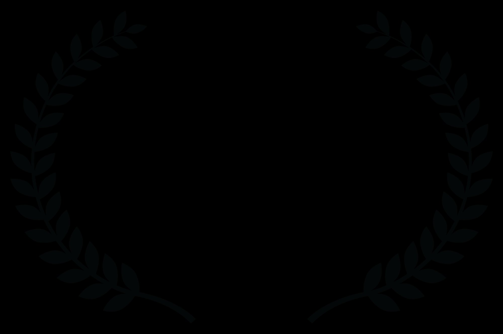
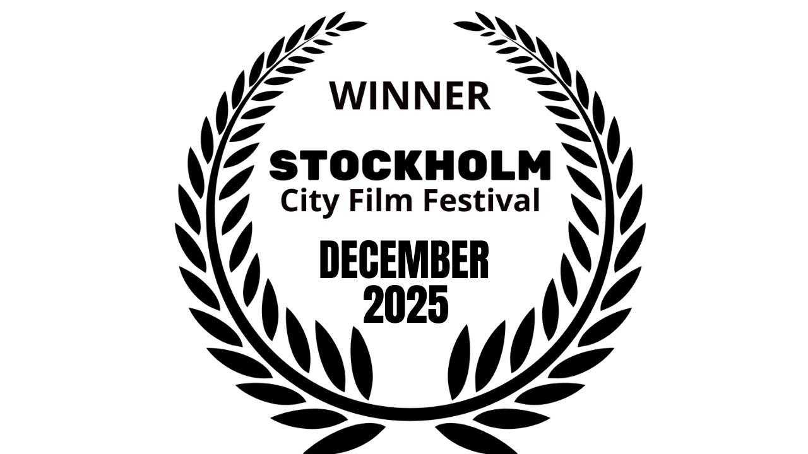

HOLDING MEMORY IN MOTION
This entry collects process artifacts from Rooted in Motion (The Ten Poem Project). The work took shape over a decade of living in the United States with an asylum case pending. During those years, I wrote poems, recorded audio notes, and kept private observations as I moved through migration, queer survival, displacement, and the long work of learning how to live inside a new society.
FROM PAGE TO BODY TO SCREEN
Those poems became the groundwork for the film: screenplay drafts, scene outlines, movement scores, camera ideas, location notes, and editing plans. I wrote lines, tried them in my body, then tried them again in front of the camera. The film grew through that cycle: writing, rehearsal, shooting, and revision.
TRACES OF THE MAKING
What you'll find here are early poem drafts and their revisions, margin notes that hold sensory detail, and sketches of how a line might land in breath, posture, timing, stillness, or a simple change of gaze. There are also scouting materials that track how terrain, weather, architecture, and light shaped the staging, along with storyboards, shot lists, stills, rehearsal fragments, and production documents that show how framing and movement shifted over time.
WHERE RHYTHM AND SILENCE DO THEIR JOB
This entry also holds the making of the film in post: development, post-production, and editing work shaped in collaboration with Gabriel Vazquez at Gabriel Martin Films. The edit was where rhythm and silence could finally do their full job, where continuity could be broken on purpose, and where the story could be rebuilt with precision.
WHAT THE PROJECT DOES
- It turns a life condition into an authored method. A decade of asylum-pending life is usually treated as background, or reduced to trauma material. Here, it becomes structured practice: poems, audio logs, movement scores, screenplay drafts, and a film language that can hold time, uncertainty, waiting, and adaptation without flattening any of it.
- It shows how writing becomes movement, and how movement becomes evidence. The project is not just dance inspired by poems. It tests how a line lives in breath, weight, gaze, pacing, and stillness, then follows what happens when that embodied decision meets the camera and survives the edit.
- It expands what a dance film can be. The edit is treated like choreography, and the camera is treated like a collaborator, not a recorder. The result is a film form where image, silence, interruption, and continuity are compositional tools, not just post-production polish.
- It builds an archive that isn't frozen. The lab materials show the making, not only the outcome. That matters because process artifacts carry knowledge: how memory is shaped, how a scene is built, how a body negotiates safety and visibility, how language becomes structure.
- It contributes to Global Movement Research in a direct way. Ten Poem is a case study of embodied archive: how location, lived history, and movement co-produce meaning. It gives GMR a concrete, intimate model for "thinking archive" work that starts in testimony and craft, not only data.
- It's a record of queer migrant survival that refuses simplification. The project holds complexity: joy and fear, belonging and estrangement, intimacy and public risk. It doesn't ask for pity. It makes form, and that's power.
SCREENINGS
FESTIVAL LAURELS


"Over time, I have come to understand that my life matters, and the stories that shape it matter. I have spent years telling my stories to others, while some got bored, others got curious, and all the while the person I was not telling the truth to was myself. In this process, in this lab, I made the conscious decision to tell myself my own stories, and to finally listen. What was revolutionary was not only that I told them, but how I told them: with care, with kindness, with empathy, grounded in a simple truth. I have been through a lot. And through it all, I have learned even more than what I have been through."